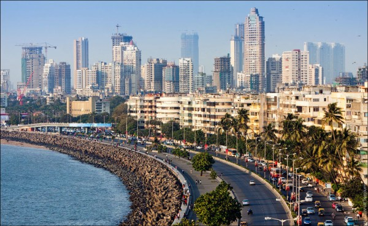

Mumbai is the capital city of Maharashtra & also the financial capital of India. Mumbai was formerly called Bombay. The name Mumbai is derived from Goddess Mumba Devi. Mumbai is a tourist spot for people located in various parts of the world. Mumbai is also blessed with great amusement parks such as Fantasy land, Tikujiniwaadi, Essel World and Water Kingdom. The city is mainly the home to Bollywood. Almost all the famous stars of India reside in Mumbai in the suburbs.
| Climate Data | ||||||||||||
|---|---|---|---|---|---|---|---|---|---|---|---|---|
| Climate | Jan | Feb | Mar | Apr | May | Jun | Jul | Aug | Sept | Oct | Nov | Dec |
| Daily highs (°C) | 31 | 31 | 33 | 33 | 33 | 32 | 30 | 29 | 30 | 33 | 33 | 32 |
| Nightly lows (°C) | 16 | 17 | 21 | 24 | 26 | 26 | 25 | 25 | 24 | 23 | 21 | 18 |
| Precipitation (mm) | 1 | 2 | 0 | 1 | 13 | 574 | 868 | 553 | 306 | 63 | 15 | 56 |
I lived 6 months in Mumbai, at Marine Lines, around 1.5 km from Church Gate local station. So most of the evenings, I used to sit at Marine Drive chaupati watching sea waves and sun set, eating fried ground nuts. Since Mumbai doesn’t have hot or harsh summers, it makes a very pleasing and beautifull view in the evening. It becomes even more thrilling at the time of high tides, when the waves rise around 60–80 feet and attack the chaupati. Sometimes I walked to Gate Way of India, crossing Colaba and sat there. Evenings are filled with a lot of local/foreign visitors.